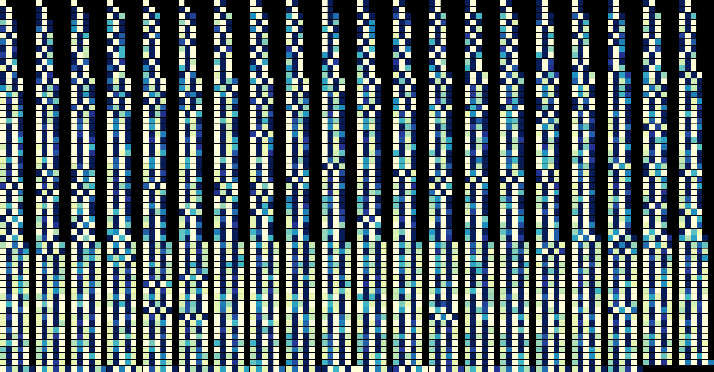

Hello! I'm a genetic engineer thinking about the future.
I completed my undergraduate studies in Neuroscience and went to medical school in Australia. During a journal club I read about the use of CRISPR gene editing to correct harmful mutations in human embryos and decided to pursue biotechnology research.
I received my training at the Walter and Eliza Hall Institute of Research in Melbourne, where I worked on developing a cell history recorder with my mentor Dr Tom Weber. We hacked prime editing (an advanced form of CRISPR) to log data into the genomic DNA of living cells:
1000 recordings of synthetic DNA sequences (tapes) in human embryonic kidney cells
I travelled to New York to work on this technology further at the Memorial Sloan-Kettering Cancer Center.
Here, I spent time exploring the fringes of synthetic biology and joined Genspace, the world's first bio-hacking organization. I collaborated with artists, designers and architects programming strange organisms to make interesting and beautiful things.
Currently, I am working on building a digital ecosystem for synthetic biology.
I look forward to a future where we can solve society's greatest existential problems (e.g. food security, climate change and human disease) using DNA, the source code of life.
mchu001.bio@gmail.com